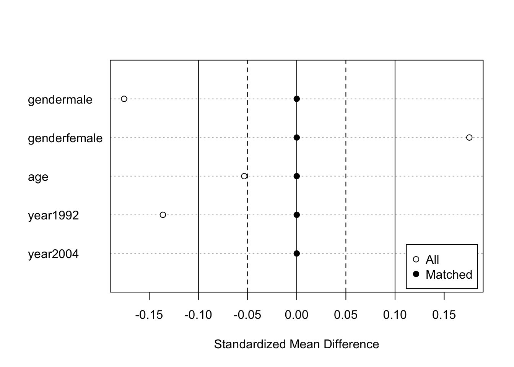
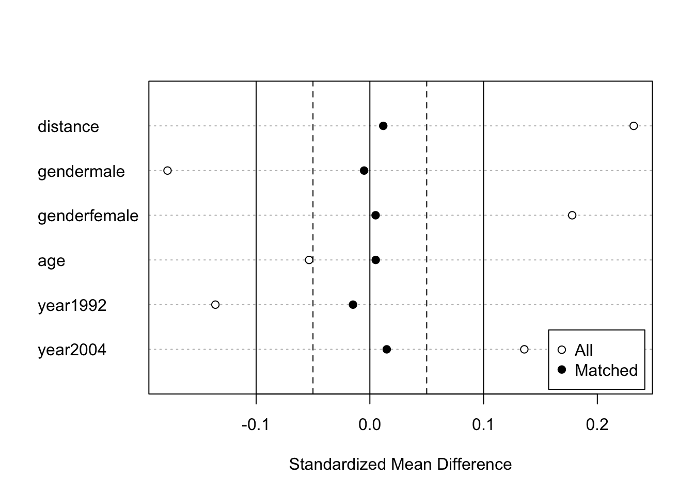
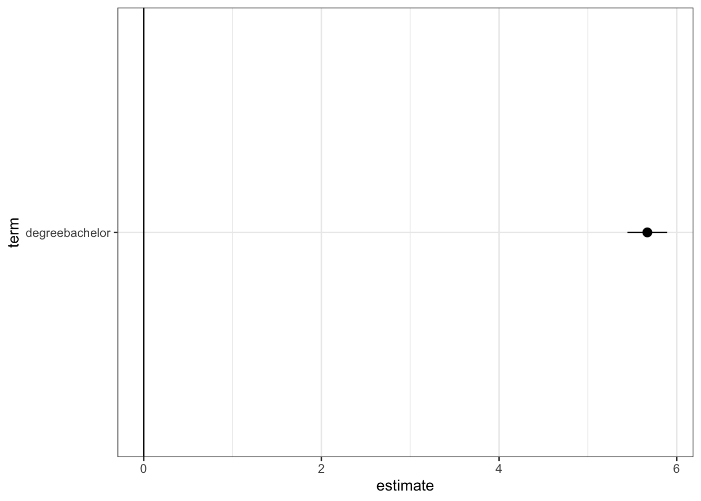
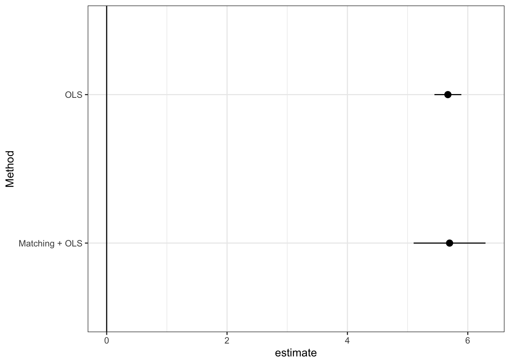

library(tidyverse)
library(AER)
library(estimatr) # Estimation with robust standard error
library(MatchIt) # Matching for preprocess
data("CPSSW9204")2 線形モデルによるパラメータの推定
関心のあるパラメータ\(\tau(X)=E[Y|d,X]-E[Y|d',X]\)を埋め込んだ線形モデルを推定する。
- 典型的には、\(E[Y|D,X]\)を線形近似し、推定する。
\[E[Y|D=d,X=x]=\underbrace{\tau}_{Interest\ parameter}\times d+\underbrace{f(x)}_{Nuisance\ function}\] - \(f(X)=\beta_0 + \beta_1 X_1 + ...+\beta_LX_L\)
\(\tau\)について点推定だけでなく、信頼区間も推定する。
Section 2.2 線形モデルを推定し、信頼区間を計算する方法を紹介
Section 2.3 近似モデルの定式化への依存度を下げるために、マッチング法を用いた前処理を導入
Section 2.4推定結果の表によるまとめ、可視化、および複数の推定結果を効率的に保存する方法を紹介
2.1 パッケージ & データ
2.2 パラメータの推定
\(\tau(x)=\tau,f(x)=\beta_0+\beta_1x_1+...+\beta_Lx_L\)と特定化
サンプル内MSEを最大化するように推定
robust standard errorを計算するためにestimatrパッケージを利用
lm_robust関数で推定
lm_robust(earnings ~ degree + gender + age + year, # Outcome ~ Treatment + Controls
data = CPSSW9204) Estimate Std. Error t value Pr(>|t|) CI Lower
(Intercept) -1.3734240 0.56012981 -2.451974 1.421837e-02 -2.4713435
degreebachelor 5.6693812 0.11409767 49.688844 0.000000e+00 5.4457365
genderfemale -2.5584302 0.10555849 -24.237085 2.042463e-127 -2.7653371
age 0.3999398 0.01870067 21.386388 4.880841e-100 0.3632843
year2004 4.7218644 0.10448036 45.193798 0.000000e+00 4.5170708
CI Upper DF
(Intercept) -0.2755044 15583
degreebachelor 5.8930259 15583
genderfemale -2.3515232 15583
age 0.4365953 15583
year2004 4.9266581 15583線形モデルによる推定は、いくつかの問題がある
異なるグループ間で、\(X\)の分布が異なる場合、回帰式の定式化に強く依存する
一般に平均効果ではなく、加重平均が推計される
サンプルサイズに比べて、少数のコントロール変数を導入できない
以下ではマッチング法、機械学手法を用いた頑強な推定を目指す
2.2.1 RCTデータへの応用
原因変数が完全にランダム化されている場合、因果効果の識別を目的に回帰分析を応用する必要はない
因果効果の推定の改善、効率性向上、を目的とした線形モデルの利用は議論されてきた
Lin (2013) は、以下のような交差項を導入したモデルを用いることで、平均の差の推定に比べて、漸近的効率性が悪化することはない（同等か改善する）ことを示した
\[E[Y|D,X]=\beta_{D}\times D+\beta_1\times X_1+...+\beta_L\times X_L\]
\[+\underbrace{\beta_{1D}\times D\times X_1+...+\beta_{LD}\times D\times X_L}_{交差項}\]
- lm_lin関数で推定可能
lm_lin(earnings ~ degree, # Outcome ~ Treatment
~ gender + age + year, # ~ Controls
data = CPSSW9204) Estimate Std. Error t value Pr(>|t|)
(Intercept) 11.8445518 0.05886786 201.2057631 0.000000e+00
degreebachelor 5.6534529 0.11317582 49.9528355 0.000000e+00
genderfemale_c -2.5004885 0.11301520 -22.1252401 7.932323e-107
age_c 0.2554277 0.02057814 12.4125730 3.276989e-35
year2004_c 3.7186028 0.11834727 31.4211113 3.546993e-210
degreebachelor:genderfemale_c -0.1059052 0.22219513 -0.4766317 6.336311e-01
degreebachelor:age_c 0.3271382 0.03945813 8.2907675 1.216210e-16
degreebachelor:year2004_c 2.3273241 0.22003125 10.5772436 4.657042e-26
CI Lower CI Upper DF
(Intercept) 11.7291640 11.9599396 15580
degreebachelor 5.4316151 5.8752907 15580
genderfemale_c -2.7220114 -2.2789655 15580
age_c 0.2150921 0.2957633 15580
year2004_c 3.4866284 3.9505772 15580
degreebachelor:genderfemale_c -0.5414335 0.3296230 15580
degreebachelor:age_c 0.2497957 0.4044807 15580
degreebachelor:year2004_c 1.8960373 2.7586110 155802.3 マッチング法による修正
回帰を行う事前準備としてマッチング法を利用する
重回帰が持つ関数形への依存度を減らせる (Ho et al. 2007)
MathItパッケージを利用
多数のマッチング法が実装されている
2.3.1 Coarsened exact matching
Coarsened exact matching (Iacus, King, and Porro 2012)の実装
- 連続変数をカテゴリー変数化することで、マッチングできるサンプルサイズを増やすことが期待できる
fit.m <- matchit(degree ~ gender + age + year,
data = CPSSW9204,
method = "CEM"
)- マッチング結果の表示
fit.mA matchit object
- method: Coarsened exact matching
- number of obs.: 15588 (original), 15588 (matched)
- target estimand: ATT
- covariates: gender, age, yearSample sizesにて、マッチングできなかったサンプル数（985のコントロールグループ中、667サンプルがマッチングできなかった）が確認できる
マッチング結果の図示
fit.m |>
summary() |>
plot(abs = FALSE)
- マッチング結果を変数として含んだデータを作成
df <- match.data(fit.m)“subclass”: マッチングしたグループ
“weights”：マッチング後の推計に用いるウェイト
マッチングしたデータを用いた推定
- 新たに作成されるweight (defaltではweights)を用いた、加重推定で実装
lm_robust(earnings ~ degree + gender + age + year,
df,
weights = weights,
clusters = subclass) Estimate Std. Error t value Pr(>|t|) CI Lower
(Intercept) -0.9406001 1.06964454 -0.8793577 3.900258e-01 -3.1770482
degreebachelor 5.6973701 0.29536430 19.2892987 8.424314e-21 5.0987422
genderfemale -2.5534913 0.19585455 -13.0376918 1.521310e-14 -2.9520114
age 0.3855614 0.03430666 11.2386741 8.520762e-10 0.3137177
year2004 4.6549789 0.18737754 24.8427793 1.299149e-23 4.2743968
CI Upper DF
(Intercept) 1.2958479 19.29879
degreebachelor 6.2959981 36.70388
genderfemale -2.1549711 32.88904
age 0.4574051 18.84870
year2004 5.0355610 34.529322.3.2 Propensity score with subclassification
Coarsened exact matchingでもマッチングできないサンプルが多数出てくる可能性
- とくに\(X\)が大量にある場合
1次元の距離指標を用いて、マッチングを行う
- 距離指標としては、Mahalanobis’ Distance、Propensity scoreなど
ここではPropensity score \(p_d(X)\)を用いる
\[p_d(X)\equiv \Pr[D=d|X]\]
属性\(X\)のユニットの中で、原因変数の値が\(d\)である人の割合
未知の場合、データから推定する必要がある
推定された傾向スコアを用いたStratification マッチング
- ロジットにて傾向スコアを推定
fit.m <- matchit(degree ~ gender + age + year,
data = CPSSW9204,
method = "subclass",
estimand = "ATE"
)- マッチング結果
summary(fit.m)
Call:
matchit(formula = degree ~ gender + age + year, data = CPSSW9204,
method = "subclass", estimand = "ATE")
Summary of Balance for All Data:
Means Treated Means Control Std. Mean Diff. Var. Ratio eCDF Mean
distance 0.4310 0.4180 0.2320 1.1147 0.0648
gendermale 0.5291 0.6167 -0.1779 . 0.0877
genderfemale 0.4709 0.3833 0.1779 . 0.0877
age 29.6460 29.7982 -0.0534 1.0019 0.0152
year1992 0.4487 0.5164 -0.1358 . 0.0677
year2004 0.5513 0.4836 0.1358 . 0.0677
eCDF Max
distance 0.1109
gendermale 0.0877
genderfemale 0.0877
age 0.0288
year1992 0.0677
year2004 0.0677
Summary of Balance Across Subclasses
Means Treated Means Control Std. Mean Diff. Var. Ratio eCDF Mean
distance 0.4239 0.4232 0.0118 1.0127 0.0041
gendermale 0.5787 0.5812 -0.0050 . 0.0025
genderfemale 0.4213 0.4188 0.0050 . 0.0025
age 29.7479 29.7332 0.0052 0.9890 0.0035
year1992 0.4828 0.4902 -0.0148 . 0.0074
year2004 0.5172 0.5098 0.0148 . 0.0074
eCDF Max
distance 0.0130
gendermale 0.0025
genderfemale 0.0025
age 0.0079
year1992 0.0074
year2004 0.0074
Sample Sizes:
Control Treated
All 8986. 6602.
Matched (ESS) 8881.41 6483.64
Matched 8986. 6602.
Unmatched 0. 0.
Discarded 0. 0. - マッチング結果の図示
fit.m |>
summary() |>
plot(abs = FALSE)
- マッチングしたデータを用いた推定
lm_robust(earnings ~ degree + gender + age + year,
df,
weights = weights,
clusters = subclass) Estimate Std. Error t value Pr(>|t|) CI Lower
(Intercept) -0.9406001 1.06964454 -0.8793577 3.900258e-01 -3.1770482
degreebachelor 5.6973701 0.29536430 19.2892987 8.424314e-21 5.0987422
genderfemale -2.5534913 0.19585455 -13.0376918 1.521310e-14 -2.9520114
age 0.3855614 0.03430666 11.2386741 8.520762e-10 0.3137177
year2004 4.6549789 0.18737754 24.8427793 1.299149e-23 4.2743968
CI Upper DF
(Intercept) 1.2958479 19.29879
degreebachelor 6.2959981 36.70388
genderfemale -2.1549711 32.88904
age 0.4574051 18.84870
year2004 5.0355610 34.529322.4 付録：推定結果の保存と表示
2.4.1 Dot-and-Whisker plotによる可視化
- Dot-and-Whisker図により点推定量と信頼区間を可視化
fit.m <- matchit(degree ~ gender + age + year,
data = CPSSW9204,
method = "CEM"
)
df <- match.data(fit.m)
Result1 <- lm_robust(earnings ~ degree + gender + age + year,
data = df) |>
tidy() |>
filter(term == "degreebachelor"
) |>
mutate(Method = "OLS")
Result1 |>
ggplot(aes(y = term,
x = estimate,
xmin = conf.low,
xmax = conf.high)
) +
geom_pointrange() +
geom_vline(xintercept = 0) +
theme_bw()
Result2 <- lm_robust(earnings ~ degree + gender + age,
data = df,
weights = weights,
clusters = subclass) |>
tidy() |>
filter(term == "degreebachelor"
) |>
mutate(Method = "Matching + OLS")
Result1 |>
bind_rows(Result2) |>
ggplot(aes(y = Method,
x = estimate,
xmin = conf.low,
xmax = conf.high)
) +
geom_pointrange() +
geom_vline(xintercept = 0) +
theme_bw()